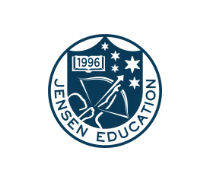
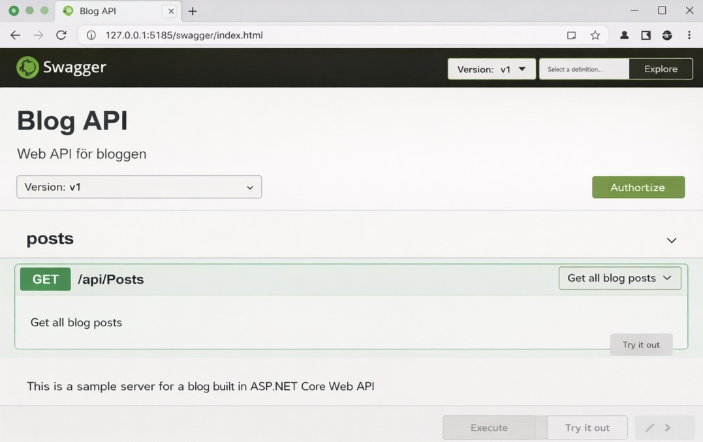
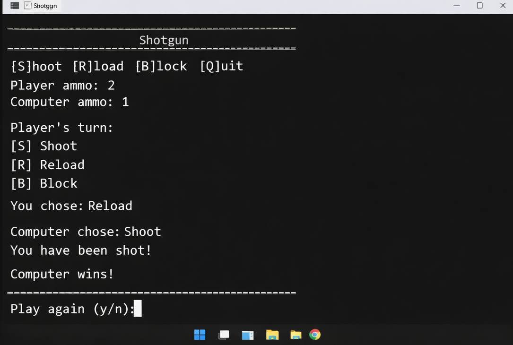

Blivande .NET-molnutvecklare · Göteborg
Sara Lindh
Med en bakgrund inom ledarskap och affärsutveckling drivs jag av att lösa problem från flera perspektiv — tekniskt, mänskligt och affärsmässigt.

Om mig
Social, nyfiken och mycket energi! Med ett genuint intresse för att förstå hur saker fungerar på riktigt. Jag kommer från retail där jag haft ansvar för människor, resultat och affär. Men det var i de systemen jag jobbade i varje dag som intresset för teknik växte fram. Idag studerar jag .NET-molnutveckling på Jensen YH och tar med mig ett perspektiv där användare, flöden och verklighet alltid är i centrum.
Hälsningar Sara Lindh
Kompetenser
Nuvarande
Kommande
Utbildning
.NET-utvecklare med molninriktning
Jensen Yrkeshögskola
Tvåårig yrkeshögskoleutbildning med fokus på systemutveckling i .NET-ekosystemet, backend-arkitektur och molntjänster i Azure. Utbildningen varvar teori med praktiska projekt och två perioder av LIA (lärande i arbete).

Självledarskap – att leda sig själv, grund
Självmotivation och attitydutveckling — metoder för att prestera och utvecklas under studietiden och i arbetslivet.
Programmering med C# och .NET, grund
C#-syntax, OOP med klasser, arv och interface, versionshantering med Git samt en introduktion till branschen och yrkesrollen.
Agil projektledning & ämnesövergripande projekt
Agila metoder i praktiken: kravhantering, sprint-planering, tvärfunktionella projekt och förståelse för konsultrollen.
Databasteknik
Databasdesign och datamodellering med SQL Server samt NoSQL — välj rätt teknik för rätt situation.
Molnutveckling med Azure
Hela livscykeln för molnapplikationer i Azure — containers, mikrotjänster, serverless, CI/CD och DevOps.
Programmering med C# och .NET, fortsättning
Fördjupad C#-utveckling: nätverksapplikationer, containermiljöer, driftsättning och AI som kodverktyg.
Självledarskap – att leda sig själv, fortsättning
Målsättning och beteendeförändring — metoder för att skapa vanor som ökar förmågan till självledarskap i yrkeslivet.
Säkerhet i molnutveckling
Säker molnarkitektur med Identity & Access Management (IAM), hotanalys och metoder för att bygga skyddade lösningar.
Testning
Testprocessen från planering till automation — testdesign, olika testtyper och QA integrerat i agila projekt.
Utveckling av webbapplikationer
HTML, CSS, JavaScript och ASP.NET för responsiva webbplatser. Kännedom om frontend-ramverk som React, Angular och Vue.js.
Lärande i arbete 1
Första praktikperioden i verklig miljö — yrkesrollen som .NET-utvecklare i praktiken med verktyg, metoder och samarbete i faktiska projekt.
Lärande i arbete 2
Fördjupad praktik med självständigt ansvar — komplexa uppgifter, tvärfunktionellt samarbete och förbättringsarbete i yrkesrollen.
Examensarbete
Självständigt fördjupningsarbete inom .NET-utveckling med systematisk analys och skriftlig presentation av resultatet.
Övriga utbildningar
Ledarskap ›
Kommunikation ›
Grafisk design ›
Gymnasium ›
Projekt

ZooSal
Webbuteckling
ZooSAL är en fiktiv djurparkswebbplats byggd i HTML och CSS som ett grupprojekt. Sidan presenterar parken med sektioner för djur, restauranger, öppettider och karta.
Vi jobbade med Git och GitHub, feature-branches och pull requests — en praktisk introduktion till ett verkligt utvecklingsflöde.
Github repo →
Bloggportal
Web API
REST API byggt i C# med ASP.NET Core för en bloggplattform. Hanterar blogginlägg, kategorier, kommentarer och användare med JWT-autentisering och Entity Framework Core mot SQL Server.
Följer skiktad arkitektur med Controllers, Services, Repositories och DTOs — affärslogik och dataaccess hålls separerade.
Github repo →
Shotgun
Konsollapplikation
Mitt första C#-projekt — ett turbaserat konsollspel mot datorn. Spelaren väljer varje runda mellan att ladda, skjuta, hagelgevär eller blockera baserat på ammunitionstillstånd.
Strukturerat med separata klasser för spellogik, spelarhantering och action-typer.
Github repo →
Adressbok
Konsollapplikation
Konsolbaserad C#-applikation med CRUD-funktionalitet. Kontakter sparas automatiskt till fil via en dedikerad FileManager-klass.
Uppdelad i separata klasser för modell, logik och filhantering med ett menybaserat gränssnitt. Grupparbete.
Github repo →Arbetslivserfarenheter
Avdelningschef Hår & Skönhet, Nordiska Kompaniet
Personalansvar för 18 medarbetare. Ledarskap, försäljning, rekrytering och event.
Franchisetagare / Butiksägare, Pressbyrån Norra hamngatan
Fullt ägaransvar. Ekonomi, inköp, personal och tillväxt.
Butikschef Pressbyrån Göteborg C
Daglig drift, personal och försäljningsuppföljning.
Övriga arbetslivserfarenheter
Service inom café, restaurang, kiosk och dagligvaruhandel.
Fortfarande nyfiken? Ta kontakt!